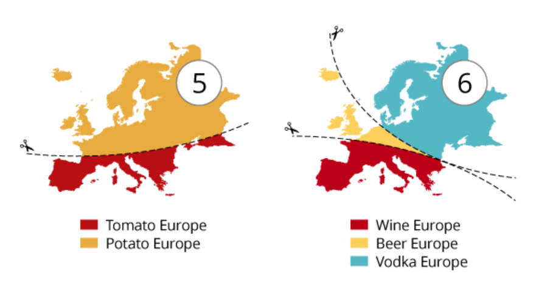
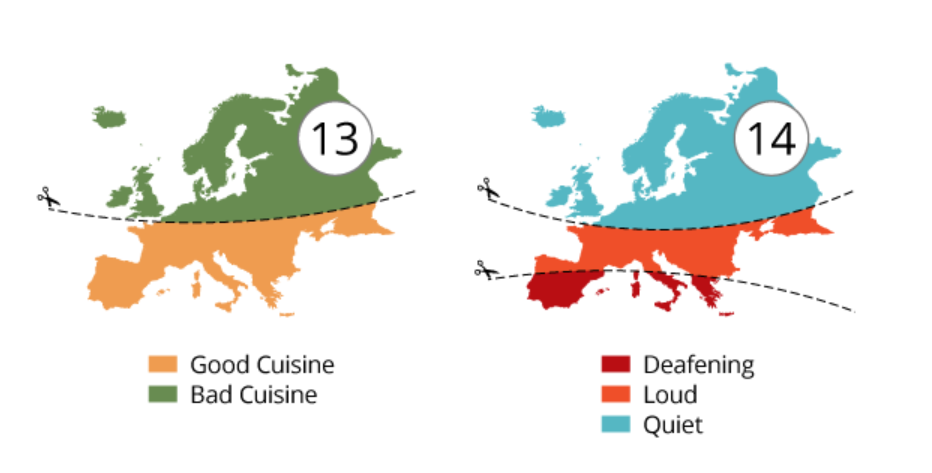
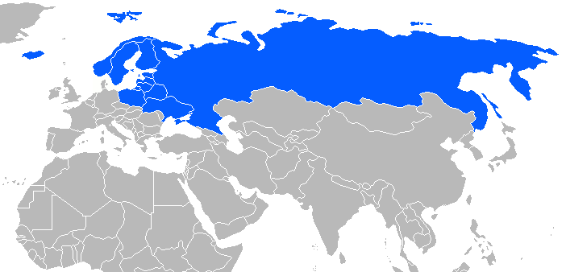
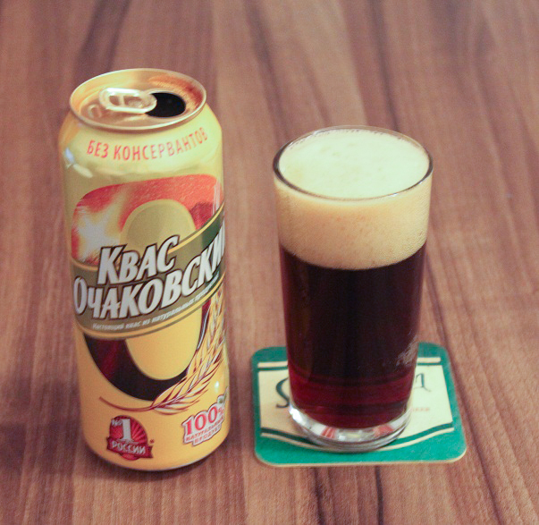
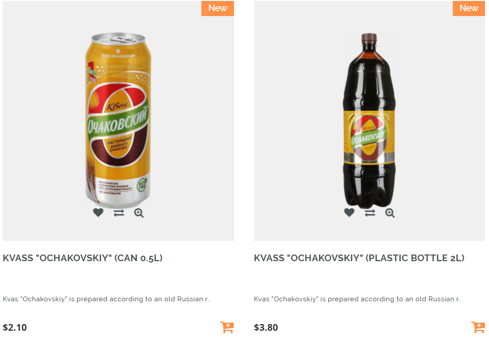
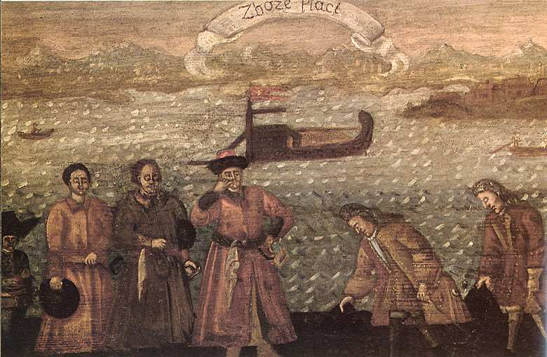
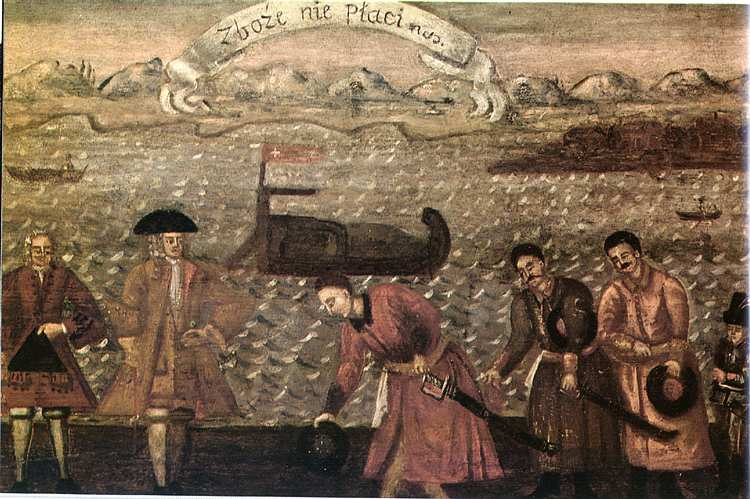
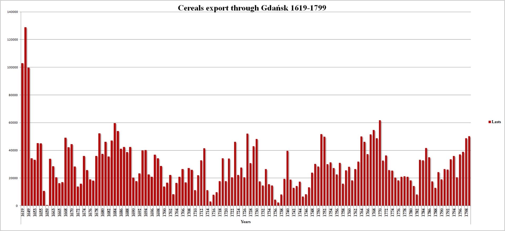

1812년 그랑다르메(Grande Armée)의 내부 상황 (3편)
게시: 2019-10-07T06:30:03+09:00
전에 다양한 기준으로 구별되는 유럽의 이모저모 중에서, 술의 종류로 구별되는 유럽은 크게 3조각이라는 자료를 본 적이 있습니다. 남부 유럽은 와인, 북서부 유럽은 맥주, 북동부 유럽은 보드카입니다.
 
(전체 20개로 구분되는 지도의 소스는 여기 https://www.reddit.com/r/MapPorn/comments/21nt0m/20_maps_of_prejudice_in_europe_1280_x_1920 입니다. 저 개인적으로는 13번 즉 맛있는 유럽과 맛없는 유럽의 구분에 공감이 갑니다. 이유는 그게 거의 5번 즉 토마토 유럽과 감자 유럽의 경계선과 거의 일치하기 때문입니다. 토마토는 감칠맛을 내는 글루탐산이 듬뿍 포함된 천연 조미료거든요.)

(저 위의 지도에서 덴마크가 보드카 지역으로 분류된 것은 좀 뜻 밖이었습니다. 저는 덴마크가 칼스버그(Carlsberg) 같은 훌륭한 맥주 브랜드를 보유한 맥주 지역이라고 생각했거든요. 보드카 벨트를 파란색으로 표시한 윗 지도를 보면 확실히 덴마크는 보드카 지역이 아니라 맥주 지역 같기는 합니다. 하지만 스칸디나비아 지역이 스웨덴과 노르웨이, 덴마크를 뜻하는 것이라는 걸 생각하면 덴마크에서도 보드카를 많이 마시긴 할 것 같아요.)
나폴레옹의 지시에 따라 네만 강 서안에 집결하던 프랑스, 독일, 이탈리아 병사들도 그 차이를 명확하게 느꼈습니다. 독일에서 폴란드로 넘어가면서 매 끼니 때마다 마시던 맥주가 보드카로 바뀌었거든요. 그런데 문제는 맥주가 보드카로 바뀌었다는 점 뿐만이 아니었습니다. 독일을 지날 때만 해도 비록 질기더라도 고기와 감자를 맥주로 씻어넘겼는데, 폴란드에 들어오니 맛대가리 없는 보드카와 함께 주어진 음식이 기껏해야 메밀 죽이었습니다. 그나마 질이 나쁜 보드카라도 꾸준히 주어지면 다행이었는데 종종 빵을 발효시켜 만든 약알콜 음료인 크바스(kwas, kvass, 러시아어로는 квас)가 보드카 대신 주어졌습니다. 크바스의 알코올 함량은 대략 1% 정도로서, 중서부 유럽 사람들에게는 보리차나 다름없는 싸구려 스몰 비어(small beer)에 해당하는 음료였습니다. 이것이 뜻하는 바는 간단했습니다. 가난한 동네로 진입해서 먹고 마시는 사정이 안 좋아졌다는 것이었습니다.

(크바스는 원래 빵을 발효시켜 만든 슬라브 음료로서, 러시아, 벨라루스, 우크라이나 및 라트비아 에스토니아 뿐만 아니라 세르비아에서도 즐겨마시는 음료입니다. 다만 다른 유럽 지역에서는 명성보다는 악명이 자자한 모양입니다. 맛은 그냥 신맛이 난다고 하는데, 원래 어원인 러시아어의 квасить '크바시트'라는 단어가 시게 만든다는 뜻이랍니다.)

(러시아 식음료를 파는 온라인 몰에서의 크바스 가격입니다. 2리터 짜리 크바스가 4천원 정도네요. 운송비와 관세 등을 생각하면... 확실히 싸군요.) 제8 엽기병(Chasseur a Cheval) 연대 소속의 줄리앙 콩브(Julien Combe) 중위는 폴란드에 들어서면서 이렇게 적었습니다. "이전까지의 행군은 유람길이나 다름없는 것이었다." 그랑다르메(Grande Armee)의 행군길 분위기가 갑자기 바뀐 것은 당연히 폴란드와 동(東)프로이센이 가난한 지역이었기 때문이었습니다. 왜 이 지역이 가난했는지에 대해서는 여러가지 이유가 있겠습니다. 무엇보다 서유럽에서 지리적 정치적 문화적으로 멀다보니 서유럽에서 시작된 산업 혁명은 물론 농업 혁명조차 제대로 전파되지 못한 것이 컸겠지요. 분명한 것은 원래 폴란드-리투아니아 연방은 17세기 전반까지만 해도 북서부 유럽에 곡물을 수출하던 곡창지대였다는 것입니다. 단치히(Danzig, 즉 그단스크 Gdansk)는 그때부터 폴란드-리투아니아의 잉여 곡물을 북서부 유럽으로 수출하며 흥성했던 항구도시였거든요. 다만 17세기 중반, 폴란드-리투아니아 의회에 만장일치제도가 도입되면서 정치적 혼란에 따른 내분과 외세 침략이 겹쳤고, 덕분에 인구 증가율도 떨어지고 곡물 생산량도 대폭 줄어들어 버렸습니다. 게다가 그렇게 가난하던 이 지역을 더 가난하게 만든 것은 바로 다름아닌 나폴레옹 자신이었습니다.
 
(17세기 중반 이후 폴란드 곡물 수출의 급감을 보여주는 그림입니다. 윗 그림은 '곡물이 돈이 된다'라는 뜻이고 아랫 그림은 '곡물이 돈이 안된다'라는 뜻이랍니다. 두 그림에서 뭐가 다른가 유심히 보니 윗 그림에서는 바다 위에 떠있는 배에 곡물이 잔뜩 실려 있고 서유럽인들이 폴란드 귀족들에게 고개를 숙이고 있습니다. 아랫 그림은 정 반대네요. 여기서 가장 비극적이고 가장 근본적인 문제는 단치히에 폴란드산 곡물을 실으러 온 배는 모두 네덜란드나 영국 등 외국 배라는 것입니다. 그만큼 폴란드의 상공업 발전이 뒤쳐졌다는 것이지요. 이는 또 폴란드의 사회 구조가 그냥 그 상태를 고수하려 했던 소수 귀족과 다수의 배운 것 없는 농노들로 구성되어 상공업 발전이 일어날 수 없는 상태였다는 것이 원인이었습니다.)

(17~18세기의 폴란드 곡물 수출량입니다. 17세기 초반만 하더라도 엄청난 양이던 곡물 수출이 이후 뚝 떨어져서 회복을 못하는 모습을 보실 수 있습니다.)
나폴레옹은 프로이센과 오스트리아, 러시아로부터 독립하고자 하는 폴란드인들의 열망을 철저하게 이용하여 바르샤바 공국으로부터 사람과 돈을 무자비하게 착취했습니다. 당시 바르샤바 공국은 9만5천의 병력을 이 원정에 참여시켰는데, 이는 프랑스를 제외하면 동맹군 중 가장 큰 부분을 차지하는 것이었고, 조그마한 바르샤바 공국이 부담할 수 있는 적정 병력의 2배에 가까운 숫자였습니다. 바로 다음으로 많은 병력을 댄 북부 이탈리아 왕국도 고작 4만5천 정도였으니까요. 부유하고 인구도 많은 바이에른군도 2만4천에 불과했습니다. 이 원정 때문에 바르샤바 공국은 거의 파산지경이었습니다. 공무원들은 1811년 말부터 아무도 봉급을 받지 못하고 있었고, 1812년 6월 이후로는 군대조차 봉급을 받지 못했습니다. 게다가 몇년 전부터 시행된 나폴레옹의 대륙봉쇄령은 폴란드 뿐만 아니라 동프로이센 지역의 경제에도 큰 타격을 주었습니다. 이 지역은 산업 발전이 더디어 주로 곡물과 삼(hemp), 목재와 같은 농산물과 함께 탄산칼륨(potash) 같은 광물을 영국으로 수출하여 돈을 벌었습니다. 그런데 대륙봉쇄령이 시행되니 이런 1,2차 산업 생산물을 팔 곳이 없어져 버렸고 덕분에 많은 농지가 경작되지 않고 버려지게 되었습니다. 설상가상이라더니 그런 상황에 1811년은 보기 드문 가뭄이 들었습니다. 이젠 수출은 고사하고 농민들이 먹을 곡물은 물론 1812년 봄에 밭에 뿌릴 종곡조차 부족한 상황이 되어 버린 것입니다. 원정 직전인 1812년 3월 말, 바르샤바 도지사의 아내가 친구에게 쓴 편지에는 이런 내용이 담겨져 있었습니다. "우리가 겪는 곤궁은 너무 심해서 사정이 이보다 더 악화될 수는 없을 것 같았어. 하지만 더 나빠질 수도 있더군. 아주 바닥이 어딘지 모를 정도로 더 나빠졌어." 더 나빠진 이유는 간단했습니다. 이미 농민들이 도토리와 자작나무 껍질로 만든 빵을 먹고 지붕의 초가를 헐어 가축들에게 사료로 주고 있는 마당에 수십만의 프랑스군, 이탈리아군, 독일군이 쏟아져들어와 감자와 보드카를 요구한 것입니다.
Source : 1812 Napoleon's Fatal March on Moscow by Adam Zamoyski https://de.wikipedia.org/wiki/Kwas https://www.russianfoodusa.com/kvas-monasturski/ https://en.wikipedia.org/wiki/Polish%E2%80%93Lithuanian_Commonwealth#Economy